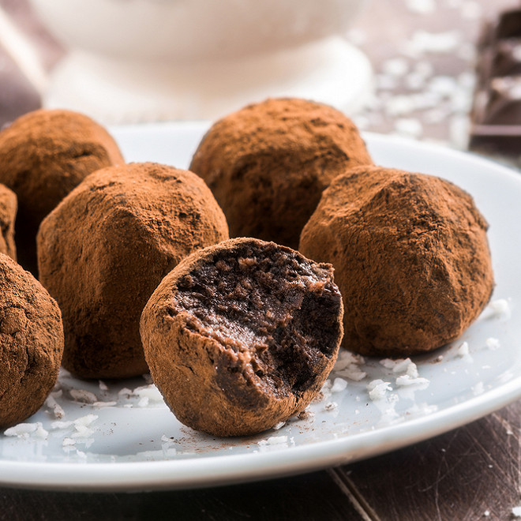

Chocolate truffles

Ingredients:
- 80g icing sugar
- 100g unsalted butter
- 250g dark chocolate
- 2 egg yolks
- 7.5g vanilla sugar
- 50g cocoa
Instructions:
- Break the chocolate into small pieces in a heat-resistant dish. Melt it in a bain-marie.
- Gradually add the butter cut into small cubes. Mix.
- When the butter has melted into the chocolate, remove the dish from the heat, add the egg yolks, vanilla sugar (it adds crunch, if you want a smooth texture, add 10 g of icing sugar and 1 drop of liquid vanilla) and the icing sugar. Mix everything well.
- Put the dough in the fridge for at least an hour so that it solidifies.
- Then, form small balls of dough by hand, roll them in the cocoa and then place them on a dish.